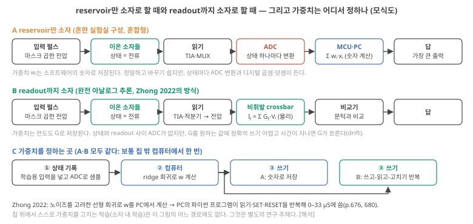
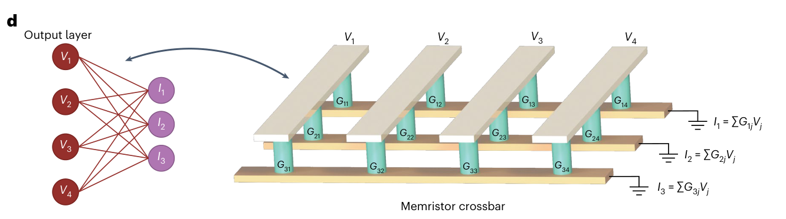
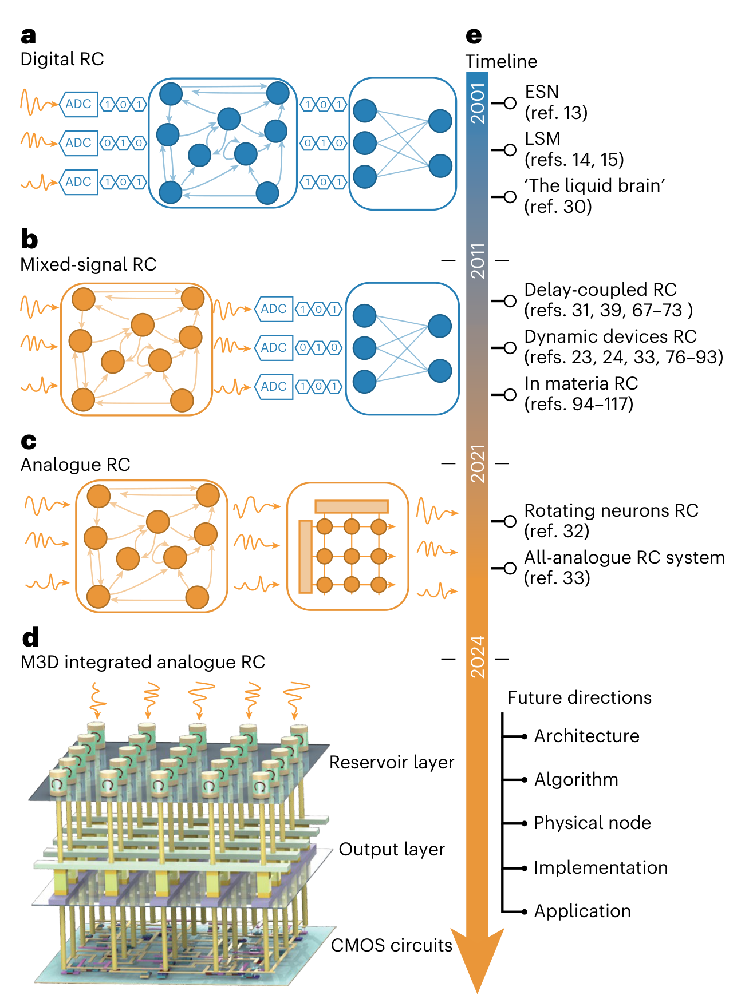
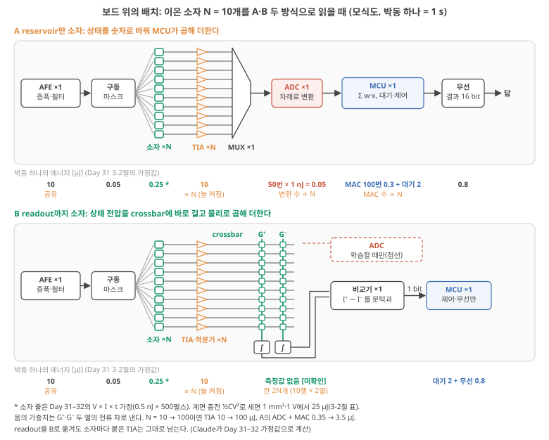
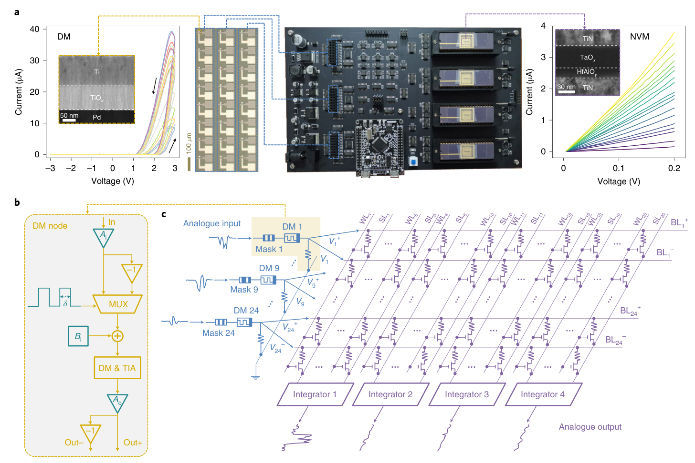
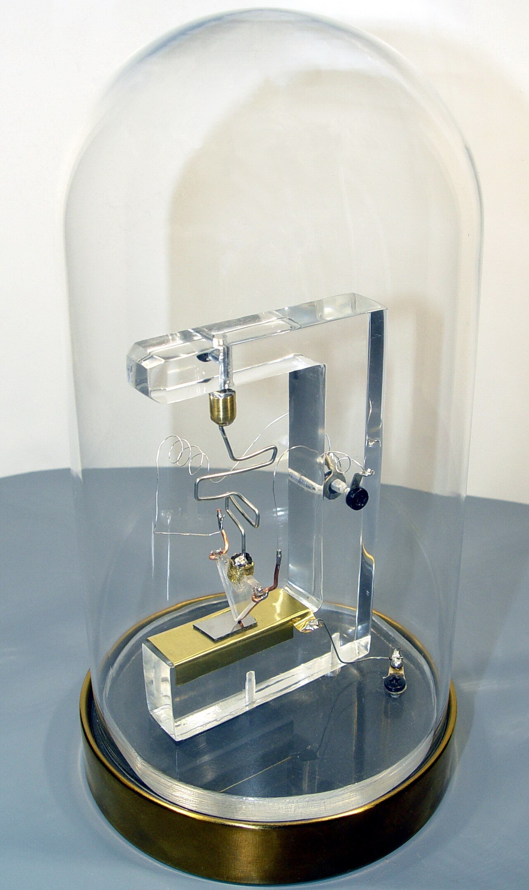

Day 50. 전자회로 접속과 진짜 병목
Phase 5 · 나는 무엇을 연구해야 하는가
이번 질문 reservoir를 전자회로와 어떻게 잇고, 그래서 진짜 병목은 무엇인가?
왜 배우나 readout을 컴퓨터에 둘지 crossbar에 둘지가 시스템 에너지와 재현성을 정한다.
오늘의 장면 A: TIA → ADC → MCU 곱셈
B: TIA → crossbar(I = ΣG·V) → 비교기
오늘 반드시 weight는 두 구성 모두 칩 밖에서 한 번 학습한다. 노드마다 붙는 TIA는 crossbar로 옮겨도 남는다.
나중에 봐도 됨 쓰기 오차 계산 · Kim 2026 칩 위 학습 · Liang Fig. 5 연표 · 영상
이후 쓰이는 곳 Day 51–52 readout·전원 배치 · Day 53–54 drift·내구 가설 · Day 55–56 최소 검증 · Day 57–58 물리 attention 쓰기 비용
지난 학습 복습
지난 학습 단위(Day 49 · 병목의 계층: 속도·전력·안정성·집적)의 핵심을 다른 예로 확인합니다. 고르는 즉시 맞았는지와 이유가 보입니다. 틀려도 아래 학습자료는 그대로 열려 있고, 틀린 문제에는 다시 볼 곳이 붙습니다.
학습자료
5. 전자회로와의 접속: reservoir만 device로, 아니면 readout까지
상황. Zhong 2022는 readout까지 memristor crossbar로 만들어 ADC를 없앴다고 합니다. 내 이온 소재 reservoir에 같은 구성을 쓰면 시스템 에너지가 정말 줄어들까요, 줄지 않는다면 어느 부품이 남을까요? 이 구간은 그 질문에 두 구성(A, B)을 부품 단위로 비교해 답합니다.
끝나면 할 수 있는 것. reservoir만 device로 하는 구성과 readout까지 device(crossbar)로 하는 구성의 차이를 ADC·weight 저장·쓰기 오차·drift로 설명하고, weight를 어디서 학습하는지, 그리고 '완전 아날로그'가 어떤 조건에서 가능한지 말할 수 있다.
먼저 부품 둘을 복습합니다(Day 7–8에서 처음 배움, 신호의 길). TIA(transimpedance amplifier)는 device에서 나온 작은 전류를 전압으로 바꾸는 증폭기로, 전류를 받는 선의 전위를 0 V 근처로 붙들어 읽기가 맞게 합니다. ADC(analog-to-digital converter)는 그 전압을 숫자로 바꾸는 변환기입니다(ADC).
그리고 Day 31–32의 사슬을 다시 꺼냅니다. 심전도 장치의 사슬은 전극 → 증폭·필터 → 입력 부호화 → device(reservoir) → 상태 읽기(TIA) → (ADC) → readout → 판정이었고, ADC는 다음 단계가 디지털일 때 필요했습니다(실제 감지 사슬에서 비용이 생기는 자리). 이 구간에서 따질 비용을 사슬 위에 미리 놓으면 이렇습니다(가정값 표의 Day 31–32 값).
- Device 상태 → TIA(device마다 하나, 박동 내내 켜짐, 채널당 1 µJ/박동)
- → MUX → ADC(하나를 나눠 씀, 변환마다 1 nJ)
- → readout(MCU라면 곱하고 더하기마다 3 nJ, crossbar라면 ADC·MAC 대신 쓰기 오차·drift) → 답
다음 절에서 이 숫자들을 노드 수 N과 함께 셉니다. ★ ADC를 이 사슬의 어디에 두느냐로 RC 시스템을 세 종류로 나눌 수 있습니다. 맨 앞(입력)에 ADC가 있어 reservoir까지 숫자로 계산하는 완전 디지털, reservoir 뒤에 ADC가 있는 혼합형, reservoir와 readout 사이에 ADC가 없는 완전 아날로그입니다(Zhong 2022와 Liang 2024가 이렇게 나눕니다. Liang의 원문 그림은 아래 기초 상자 뒤에 있습니다). 이번 구간은 둘째와 셋째의 차이를 봅니다. 아래 구성 A·B는 이 둘을 보여 주는 대표 예일 뿐이며, 실제 시스템에는 노드마다 ADC를 따로 두거나 출력 일부만 crossbar로 계산하는 등 중간 형태도 설계할 수 있습니다. 해석
그림 9를 먼저 보세요. 위 줄 A와 가운데 줄 B는 입력 펄스부터 답까지 같은 길을 가다가 세 번째 상자(읽기) 뒤에서 갈라집니다. A에는 빨간 ADC 상자가 있고 B에는 없습니다. 맨 아래 C(weight를 정하는 곳)는 뒤의 학습 절에서 봅니다. 상자 안의 낯선 이름(적분기, 비교기, \(\Sigma G \cdot V\))은 바로 아래 기초 상자에서 하나씩 설명합니다.

Reservoir만 device로 vs readout까지 device로
Readout이 하는 일. readout은 상태 \(x_1, x_2, \dots, x_N\)에 weight \(w_1, \dots, w_N\)을 곱해 더하는 계산 \(y = w_1 x_1 + w_2 x_2 + \cdots + w_N x_N + b\)입니다(ridge). 이 계산을 어디서 하느냐가 두 구성을 가릅니다.
구성 A — reservoir만 device(혼합형). device 상태를 읽어(TIA: 전류를 전압으로 바꿔 키우는 증폭기. Device가 여럿이면 TIA 출력들을 MUX로 하나씩 골라) ADC로 숫자로 바꾸고, MCU(작은 범용 계산 칩, 센서 노드와 마이크로컨트롤러(MCU))나 PC가 곱셈·덧셈을 합니다. Weight는 메모리에 적힌 숫자입니다.
- 장점: weight가 정밀하고(32 bit 숫자), 다시 학습하면 숫자만 바꾸면 되며, 시간이 지나도 변하지 않습니다.
- 단점: 상태 하나를 읽을 때마다 ADC 변환과 디지털 곱셈·덧셈이 듭니다. 상태가 120개면 박동마다 변환 120번입니다. Day 31–32에서 ADC가 시스템 에너지의 큰 몫이 될 수 있음을 봤습니다.
- 폴더의 이온 RC 논문은 모두 이 구성입니다(readout은 MATLAB, PyTorch, scikit-learn).
구성 B — readout까지 device(완전 아날로그 inference). 상태 전류를 TIA나 적분기(integrator: 전류를 capacitor에 정해진 시간 동안 모아, 모인 전하 \(Q\)를 전압 \(V = Q/C\)로 내는 회로)로 전압으로 만든 뒤, 숫자로 바꾸지 않고 바로 비휘발(non-volatile, 전원을 꺼도 값이 남는, 같은 현상, 정반대의 역할: 휘발성과 비휘발성) memristor crossbar의 가로 선에 겁니다. ★ 교차점의 conductance \(G\)(전류가 얼마나 잘 흐르는가, 저항의 역수, conductance)가 weight이고, 세로 선에 모이는 전류 \(I_j = \sum_i G_{ji} V_i\)가 곧 가중합입니다(아래 Liang 2024의 원문 그림 Fig. 4d). 마지막에 비교기(comparator, 두 전압 중 어느 쪽이 큰지만 알려 주는 회로)가 문턱과 비교해 답을 냅니다. Weight는 conductance입니다. Conductance는 늘 0 이상이므로, 음의 weight는 세로 선 두 개(\(G^+\), \(G^-\))를 짝으로 두고 두 전류의 차 \(I^+ - I^-\)로 나타냅니다(세로 선을 회로 용어로 비트선(bit line, BL)이라 부르므로, 아래 Zhong 2022 그림에서는 BL⁺·BL⁻).
- 장점: 상태와 readout 사이에 ADC가 없습니다. 곱셈·덧셈을 물리가 병렬로(여러 개를 동시에) 합니다.
- 단점: ★ (1) 쓰기 오차: 원하는 \(G\)를 정확히 쓰기 어렵습니다. 쓰고-읽고-고치기를 반복하는 쓰기(write-verify)는 회로 복잡도와 시간을 크게 늘리고, 이런 방식으로 보고된 프로그래밍 정밀도는 8 bit 아래입니다(8 bit는 conductance를 2⁸ = 256단계로 구분해 쓸 수 있다는 뜻입니다). 작은 양·음 펄스를 번갈아 주어 잡음을 줄이는 방법으로 11 bit를 보인 예도 있지만, 읽기·쓰기를 여러 번 되풀이하는 시간과 에너지가 듭니다 Jiang 2026, p.1115. (2) drift: 쓴 뒤에도 conductance가 예측하기 어렵게 흐릅니다 Jiang 2026, p.1115. (3) readout용 device는 학습한 weight를 붙잡아야 하므로 비휘발이어야 합니다 Liang 2024, p.198. (4) 배열의 sneak path 때문에 보통 1T1R이 필요합니다(앞의 배열 절).
원문 그림 두 장. 위 구성 B를 원문 그림으로 확인합니다. 아래 Liang 2024의 원문 Fig. 4d는 readout(출력층) 신경망(왼쪽)이 crossbar(오른쪽)와 같은 계산이라는 것을 보입니다. 오른쪽에서 위쪽 막대 넷이 입력 전압 \(V_1\)–\(V_4\), 기둥 열두 개가 conductance \(G_{11}\)–\(G_{34}\), 아래쪽 막대 셋에서 전류 \(I_1\)–\(I_3\)이 나옵니다. \(I_1\)에 어떤 \(G\)들이 참여하는지 세어 보세요.


5-1. 보드 위에서 보면: 부품은 어디에 있고, 노드 수 N이 늘면 무엇이 늘어나나
무엇을 보려는가. 앞의 그림에서 A(reservoir만 device)와 B(readout까지 device)는 신호가 지나는 순서였습니다. 실제 장치에서는 그 상자들이 판 위의 서로 다른 자리에 놓인 부품이고, 어떤 부품은 device마다 하나씩, 어떤 부품은 모두가 하나를 나눠 씁니다. 그 구분이 노드를 늘릴 때의 비용을 정합니다. 숫자는 Day 31–32의 가정값(device 10개, 박동 하나 = 신호 1 s)을 그대로 씁니다(가정 표). 그림 10이 그 배치를 그린 것입니다.

A에서 device마다 붙는 것. device 하나에 입력 펄스선 하나, 그리고 그 device 전류만 받는 TIA 하나가 붙습니다. TIA는 박동이 들어오는 1 s 내내 켜져 있어야 하므로(실제 감지 사슬에서 비용이 생기는 자리) 채널마다 1 µW × 1 s = 1 µJ, 10채널이면 10 µJ입니다. TIA 출력 10개는 MUX로 ADC 하나를 나눠 쓰고, ADC는 device마다 5번씩 모두 50번 변환합니다(50 × 1 nJ = 0.05 µJ). MCU 하나가 그 50개 숫자에 weight를 곱해 더합니다(MAC 100번 × 3 nJ = 0.3 µJ).
B에서 바뀌는 것. TIA·적분기는 그대로 device마다 하나씩 남습니다. 상태 전압 10개는 MUX와 ADC를 거치지 않고 crossbar의 행 10개에 바로 걸리고, 출력 하나(정상/이상)를 위한 열 두 개(G⁺, G⁻)에서 전류가 모여 적분기 → 비교기를 거쳐 1 bit 답이 됩니다. ★ 상태와 readout 사이의 ADC 50번과 MAC 100번이 없어지는 대신 crossbar 칸 20개(10행 × 2열)와 적분기·비교기가 생깁니다. 이 새 부품들의 에너지는 이 조건에서 잰 값이 폴더에 없어 비워 둡니다. 미확인 ADC는 학습할 때(상태 기록, 쓰기 확인)에만 씁니다(점선, 바로 아래 학습 절). 이 그림은 출력 하나와 device당 상태 하나로 줄인 모식도이고, Zhong 2022의 실제 회로는 아래 원문 그림에 있습니다.
N을 10 → 100으로 늘리면. [Day 31–32 가정값, Claude 계산]
| 부품 | 개수 | A: 박동당 [µJ], N = 10 → 100 | B: N = 10 → 100 |
|---|---|---|---|
| Device·입력선 | N | Device 줄은 앞의 박동 장부 표 | 같음 |
| TIA (늘 켜짐) | N | 10 → 100 | 10 → 100 |
| ADC 변환 (ADC 1개 공유) | 5N번 | 0.05 → 0.5 | Inference에는 없음(학습 때만) |
| 곱하고 더하기 | A: MCU MAC 5N × 2번 / B: crossbar 칸 2N개 | 0.3 → 3 | 칸 20 → 200개, 에너지 미확인 |
| AFE·MCU 대기·무선 | 1 (공유) | 12.8 → 12.8 | 12.8 |
사슬로 읽기. 노드 N개 → TIA N채널이 박동 내내 켜짐 → 채널당 1 µJ/박동 → N = 10이면 10 µJ로 readout 계산(ADC + MAC 0.35 µJ)의 약 30배, N = 100이면 100 µJ(readout 3.5 µJ의 약 30배). 그래서 readout을 crossbar로 옮겨(B) ADC·MAC를 없애도 늘 켜진 TIA는 그대로 남아, N = 10에서 장부의 합은 23.45 → 약 23.1 µJ(새 부품 제외)로 거의 줄지 않습니다. 노드 수를 늘릴 때의 병목은 readout의 위치보다 상태를 읽는 회로의 개수와 전력입니다. Day 31–32에서 본 민감도(TIA가 채널당 0.76 µW보다 작아야 B 경로가 디지털 경로보다 싸다)가 N이 커질수록 더 중요해지는 이유입니다. [해석, Day 31–32 가정값]
5-2. Weight는 어디서 학습하나: 두 구성 모두 칩 밖에서, 한 번
학습용 입력을 넣고 상태를 기록(ADC로 샘플)한 뒤, 컴퓨터가 ridge 회귀(연립방정식 한 번으로 weight를 구하는 방법)로 \(w\)를 계산합니다. A는 그 숫자를 메모리에 적고, B는 그 숫자를 conductance로 씁니다. Zhong 2022는 잡음을 일부러 섞어 계산하는 선형 회귀로 \(W_{out}\)을 구하고 Zhong 2022, p.676, PC의 파이썬 프로그램이 "읽고 → 목표와 비교하고 → SET(conductance를 올리는 쓰기 펄스) 또는 RESET(내리는 펄스)을 주는" 순환을 반복해 0–33 µS 사이에 썼습니다 Zhong 2022, p.676, 680. ★ 그래서 "완전 아날로그" 시스템에도 학습 단계에서는 ADC가 쓰였습니다. 저자들은 ADC가 적분기 출력을 모으는 것 외에는 학습 중 상태 샘플링과 weight 쓰기 단계에서만 쓰인다고 적습니다 Zhong 2022, p.679.
5-3. 쓰기 오차는 출력을 얼마나 흔드나
B 구성의 가장 큰 걱정인 쓰기 오차를 작은 숫자로 봅니다. 상태 4개, weight 4개입니다.
계획한 weight로 낸 출력. 상태 \(x = (0.5, -0.5, 0.5, 0.5)\), 학습한 weight \(w = (0.2, 0.4, -0.1, 0.3)\). 출력 \(y = 0.2 \times 0.5 + 0.4 \times (-0.5) + (-0.1) \times 0.5 + 0.3 \times 0.5 = 0.1 - 0.2 - 0.05 + 0.15 = 0.00\).
실제로 쓰인 weight로 낸 출력. 각 weight를 쓸 때 ±0.04의 오차가 났습니다. 실제로 쓰인 값이 \(w' = (0.24, 0.36, -0.06, 0.34)\)라면(오차 +0.04, −0.04, +0.04, +0.04), \(y' = 0.12 - 0.18 - 0.03 + 0.17 = 0.08\).
출력이 움직인 양. \(y' - y = 0.08\). 이것은 오차 × 상태를 더한 것과 같습니다. \(0.04 \times 0.5 + (-0.04) \times (-0.5) + 0.04 \times 0.5 + 0.04 \times 0.5 = 0.02 + 0.02 + 0.02 + 0.02 = 0.08\). 이번에는 모든 항이 같은 방향으로 더해진 최악의 경우입니다.
상태가 많아지면. 오차의 부호가 무작위면 서로 일부 상쇄되어, 출력 흔들림의 크기는 대략 (오차 크기) × (상태 크기) × \(\sqrt{N}\)입니다. \(N = 120\)(Zhong 2022의 상태 수)이면 \(0.04 \times 0.5 \times \sqrt{120} \approx 0.04 \times 0.5 \times 10.95 \approx 0.22\). 판정 문턱 근처의 박동이라면 이 정도 흔들림이 답을 뒤집을 수 있습니다. 가정
Zhong 2022의 대응. Zhong 2022는 학습할 때 일부러 잡음을 섞어 잡음에 덜 민감한 weight를 구했고, 잡음 수준을 올리면 학습 오차는 조금 늘지만 시뮬레이션 시험 오차(평균과 흩어짐)가 빠르게 줄었다고 보고합니다 Zhong 2022, p.676. 쓰기 허용 오차는 device 잡음 때문에 목표 최댓값의 0.04배보다 작게 할 수 없었습니다 Zhong 2022, p.680. 위 예제의 ±0.04는 이 숫자를 빌린 것입니다.
Zhong 2022가 얻은 숫자. 그렇게 해서 얻은 숫자가 심전도 96.6%(디지털 RC 98.2%)와 제스처 평균 1.1% 손실, 그리고 전력 99.9% 이상 절감입니다 Zhong 2022, p.677, 679. 전력 절감의 두 이유로 저자들은 ADC를 없앤 것과, 큰 순환 신경망 대신 동적 memristor 몇 개를 병렬로 쓴 것을 듭니다 Zhong 2022, p.679. 이 99.9%가 어느 부품까지 센 값인지는 본문에 적혀 있지 않습니다 미확인.
원문 그림을 읽기 전에. 아래 Zhong 2022의 원문 Fig. 2는 구성 B를 실제로 만든 하드웨어입니다. a 가운데의 검은 판이 시스템 전체이고, c가 그 신호 경로입니다. c에서 ADC 상자를 찾아보세요.

5-4. 완전 아날로그는 언제 가능한가, 그리고 이온–전자 접속의 비용
완전 아날로그는 언제 가능한가. 위를 모으면 조건은 이렇습니다. 해석
- Reservoir 상태가 crossbar가 받을 수 있는 전압으로 나와야 한다. 상태 읽기 회로(TIA·적분기)는 여전히 필요합니다.
- Readout weight가 학습 뒤 고정되고, 재보정 주기 동안 충분히 안 흘러야 한다(비휘발, 낮은 drift). Day 33–34의 재보정 주기 계산이 그대로 적용됩니다.
- 마지막 답이 문턱 비교(예/아니오)처럼 단순해야 끝에서도 ADC가 필요 없다. 여러 숫자를 내보내야 하면 끝에 변환이 다시 생깁니다.
- 학습은 칩 밖에서, 순서 제어는 MCU가. "완전 아날로그"는 inference의 신호 경로를 말하는 것이지, 디지털 부품이 하나도 없다는 뜻이 아닙니다.(Day 31–32)
- 이온 device를 어디에 쓰나. 연성 이온 device는 대체로 휘발성이라, weight를 오래 붙잡는 readout에는 맞지 않습니다. Wang 2025는 연성 이온 전도체 시냅스 device 대부분이 휘발성이라 장기 weight 유지에 맞지 않는다고 적습니다 Wang 2025 (Chem. Soc. Rev.), p.328. ★ 그러니 현실적인 그림은 reservoir는 이온 device, readout crossbar는 산화물·CMOS 같은 다른 device인 혼성입니다. 이온 device로 readout까지 만든 시연은 폴더에 없습니다.
칩 위 학습(on-chip training)은? 폴더에서 device 위에서 weight가 스스로 바뀌는 학습을 하드웨어로 보인 것은 Kim 2026의 자가발전 아날로그 시스템입니다. 확산형·드리프트형 산화물 memristor와 저항·capacitor로 동전 크기의 PCB를 만들어 비지도 학습(unsupervised learning, 정답 없이 입력의 시간 관계로 weight가 바뀌는 규칙)을 했습니다 Kim 2026, p.543. 이온 device도 RC readout도 아니지만, "학습까지 아날로그로"가 원리적으로 가능하다는 예입니다. 다만 이 시스템도 빛·압력 자극의 시작을 맞추는 데 마이크로컨트롤러를 썼습니다 Kim 2026, p.540.
이온–전자 접속 자체의 비용. 마지막으로, 이온 device와 전자 회로가 만나는 경계에서 생기는 비용을 Roadmap이 정리합니다. 전자 device의 전하 이동은 ns 단위인데 이온 이동은 µs–s라 시간척도가 맞지 않고, 이온–전자 변환 같은 영역 간 신호 변환은 지연·에너지 손실·신호 왜곡을 들여오며, 그래서 박자 맞추기·버퍼·오류 허용 장치가 필요하다는 것입니다 Roadmap 2026, p.8126. 연성 이온 소재는 단단한 CMOS에 봉지·접속하기 어렵고, 이온겔은 전자 device와 붙였을 때 안정한 접촉과 장기 수화를 유지하기 어렵다고도 씁니다 Roadmap 2026, p.8125.
- A(reservoir만 device): weight는 숫자, 정밀·재학습 쉬움, 대신 상태마다 ADC. 폴더 이온 RC는 모두 A.
- 보드 위: TIA는 device마다(N개, 늘 켜짐), ADC·MCU는 공유. N = 10 → 100이면 TIA 10 → 100 µJ/박동, readout(ADC + MAC) 0.35 → 3.5 µJ. Readout을 crossbar로 옮겨도 TIA는 남는다 [Day 31–32 가정값, Claude 계산].
- B(readout까지 crossbar): ADC 없이 물리로 가중합. 대신 쓰기 정밀도는 보통 8 bit 미만(반복 쓰기로 11 bit 예), drift Jiang 2026, p.1115, 비휘발 필요 Liang 2024, p.198. 오차 ±0.04, 상태 120개면 출력이 약 0.22 흔들림 가정.
- 학습은 A·B 모두 칩 밖 컴퓨터에서 한 번(ridge), B는 쓰고-읽고-고치기로 옮긴다 Zhong 2022, p.676, 680. 학습 단계에는 ADC가 쓰인다.
- 완전 아날로그의 조건: 전압 상태, 고정·저drift weight, 단순 문턱 출력, MCU 제어. 이온 device는 휘발성이라 readout보다 reservoir 쪽 Wang 2025 (Chem. Soc. Rev.), p.328 해석.
6. 그래서 진짜 병목은 무엇인가
이 구간을 읽고 나면 속도·전력·재현성·집적·안정성·전자 인터페이스 여섯 후보를 네 질문에 통과시켜, 어느 것이 메커니즘에서 오는 진짜 병목이고 어느 것이 공정·보고의 빈칸인지 내 판단으로 적을 수 있다.
6-1. 병목을 사슬로 쓰기: 원인 → 결과 → 숫자
병목 후보를 이름만 늘어놓으면 무엇을 고쳐야 하는지 보이지 않습니다. 앞 절들(속도·전력·안정성·배열·접속)의 계산을 원인 → 중간 단계 → 숫자 → 결과의 사슬로 다시 쓰면, 사슬의 어느 고리를 끊어야 하는지가 보입니다. 숫자는 모두 앞 절의 가정값과 계산입니다.
읽는 법. 화살표마다 앞 칸이 뒤 칸을 일으킵니다. 처음에는 5번(내구)만 끝까지 따라가 보세요. "1박동/s → 1년 1.6 × 10⁹ 펄스 → 보고된 최대의 4 × 10⁵배 → 측정 자체가 없음"이 한 줄의 모양입니다. 나머지는 같은 모양이니 훑어 읽고, 내 소재에 걸리는 줄만 다시 읽으면 됩니다.
- 속도 (device). 손으로 만든 겔 L ≈ 1 mm → τ ~ L²/D ≈ 10³ s(D = 10⁻⁹ m²/s) → 펄스 하나에 1 s가 드는 device로 MNIST 7만 장을 처리하면 약 356일(Day 47–48) → 대량 처리·time multiplexing에는 병목. 그러나 심전도 박동(약 1 s)에는 52 ms–수 s의 τ가 맞으므로 이 응용에서는 병목이 아니다.
- 에너지 (device → 시스템). 전극 1 mm² × 계면 10 µF/cm² → C = 0.1 µF → ±1 V 펄스마다 ½CV² = 50 nJ → 박동당 500펄스면 25 µJ → 디지털 경로 전체(21.05 µJ)보다 크다(앞의 박동 장부). 전극 한 변을 1/10로 줄이면 1/100인 0.25 µJ가 되고, 병목은 늘 켜진 TIA(10 µJ)로 옮겨 간다.
- 배열과 readout 배치 (회로). 노드 N개 → device마다 TIA가 박동 내내 켜짐 → 채널당 1 µJ/박동 → N = 100이면 100 µJ로 readout 계산(3.5 µJ)의 약 30배 → readout을 crossbar로 옮겨도 이 항은 남는다(앞의 보드 위 부품 설명). 큰 crossbar에서는 IR drop이 ~N²로 커져 N = 1,000에서 Day 7–8 모형으로 약 1 V(앞의 배열 둘레 설명).
- 집적 밀도 (배열). τ ≥ 0.1 s를 지키려면 L ≥ 10 µm → 칸 간격 ≥ 약 20 µm → 1 cm²에 많아야 약 2.5 × 10⁵개 가정. 지금의 인쇄 배열은 약 6개/cm²(Guo 2026) → 노드 수십–수백이면 되는 응용에는 충분할 수 있지만, 큰 배열은 공정과 메커니즘 양쪽에서 막힌다(앞의 집적 밀도 계산).
- 내구·안정성 (device). 1박동/s × 박동당 50펄스 → 1년 약 1.6 × 10⁹ 펄스 → 보고된 연성 device의 최대 약 4 × 10³ 펄스의 4 × 10⁵배 → 이식 1년을 견디는지 판정할 측정 자체가 없다(앞의 안정성 절). 탈수로 17시간 동안 전류가 줄었다는 보고(Guo 2026) → 재보정 주기가 시간 단위일 수 있다 해석.
- Device 간 재현성 (device·배열). 3×3 배열 9개 device의 교차점 전압 560 ± 60 mV(약 ±11%, Guo 2026) → 칩마다 상태 값이 달라짐 → 한 칩에서 학습한 readout이 다른 칩에 그대로 옮겨지지 않음(칩 사이에서는 readout이 옮겨지지 않는다) → 칩마다 상태를 기록하고 다시 학습하는 비용(상태를 ADC로 기록하고 컴퓨터가 weight를 다시 구하는 단계)이 반복된다.
- 이온–전자 접속 (시스템). 전자의 전하 이동은 ns, 이온 이동은 µs–s(Roadmap 2026) → 경계마다 지연·에너지 손실·신호 왜곡 → 박자 맞추기·버퍼 회로가 추가된다 → 그 회로의 전력은 폴더 문헌에서 잰 값이 없다(모름).
속도와 집적 밀도의 사슬은 확산 물리(τ ~ L²/D)에서, 에너지의 사슬은 계면의 전기화학에서, readout 배치와 이온–전자 접속의 사슬은 회로에서, 내구와 재현성의 사슬은 재료와 공정에서 시작합니다. 어디서 시작하느냐가 아래 표의 '메커니즘인가 공정인가'와 '고분자 설계로 바꿀 수 있나'라는 두 질문의 답이 됩니다. 해석
6-2. 네 질문으로 판정하기
앞 절들의 결과를 네 질문(요구가 실재하나 / 메커니즘인가 공정인가 / 대안이 이미 내나 / 내가 바꿀 수 있나)에 넣어 봅니다.
먼저 표의 둘째 줄(내구·안정성)을 말로 풀어 보면 이렇습니다. Q1 이식 장치는 1년 1.6 × 10⁹ 펄스를 요구한다 → Q2 탈수·전극 반응이라 재료와 봉지의 문제다 → Q3 고체 device는 10⁹–10¹² 회를 낸다 → Q4 가교·이온겔·봉지로 일부 바꿀 수 있다 → 그래서 "진짜 병목 후보 1순위, 그런데 측정이 없다"입니다.
나머지 줄도 같은 순서로 읽으면 됩니다. 아래 표는 판단의 예입니다. 응용을 무엇으로 잡느냐에 따라 판정이 바뀌므로, 여기서는 Day 51–52의 이식형 심전도 장치를 응용으로 놓았습니다. 내 응용으로 바꿔 다시 채우는 것이 이번 내 답의 일입니다.
| 후보 (계층) | Q1 응용이 요구하나 | Q2 메커니즘 vs 공정 | Q3 대안이 이미 내나 | Q4 고분자 설계로 | 판정 해석 |
|---|---|---|---|---|---|
| 속도 τ (device) | 박동 ~1 s, τ는 ms–s면 됨 | τ ~ L²/D: 크기·D가 정함(메커니즘이지만 조절 가능) | 전자 device도 ms–s를 냄 | 가능(크기, 가교, 이온 종류) | 이 응용에서는 병목 아님. 다만 경쟁 우위도 아님 |
| 반복 내구·안정성 (device) | 1년 1.6 × 10⁹ 펄스, 몸 안 수년 | 탈수·팽윤(재료+봉지), 전극 반응(전기화학) | 고체 device 10⁹–10¹² 회 | 일부 가능(이온겔, 가교, 봉지) | 진짜 병목 후보 1순위. 측정 자체가 없음 |
| Device 간 재현성 (device·배열) | Readout을 칩마다 다시 학습하면 비용 | 대부분 공정(손으로 만든 mm 겔) | — | 재료 균일성은 일부 | 진짜 병목 후보. 먼저 재야 함 |
| 집적 밀도 (배열) | 이 응용은 노드 수십–수백이면 충분할 수 있음 | 공정 + 메커니즘(작게 하면 τ도 짧아짐) | CMOS는 비교 불가한 밀도 | 제한적 | 대규모 응용에서는 병목, 소수 노드 응용에서는 아님 |
| 전자 인터페이스·봉지 (시스템) | 모든 이식 응용 | 공정·회로가 크지만, 이온–전자 변환은 계면 물리 | — | 계면 소재 설계로 일부 | 진짜 병목 후보. 회로·패키징과 함께 풀 문제 |
| 시스템 에너지 (시스템) | 배터리 수명 | 아직 측정이 없음 | MCU + 소프트웨어 기준선 | — | 모름. 병목인지 이득인지 먼저 재야 함 |
표가 말하는 것. 연성 이온 RC의 실용화를 막는 것은 "느림"보다 오래·똑같이 버티는 것(내구·drift·device 간 재현성)과 전자 세계와 붙는 것(인터페이스·봉지)일 가능성이 큽니다. 그리고 가장 중요한 숫자인 시스템 에너지는 폴더 문헌에서 잰 것을 찾지 못했습니다. 해석 이 판단은 응용에 따라 바뀝니다. 실험실의 촉각 센서라면 내구 요구는 훨씬 낮고, 데이터센터라면 속도와 밀도가 결정적입니다.
이번 반론
가장 강한 반론은 이것입니다. "지금의 병목은 모두 공정과 공학의 문제다. 실리콘 트랜지스터도 처음에는 크고 불안정했지만 수십 년의 공정 개발로 풀렸다. 연성 이온 device도 투자와 시간이 쌓이면 내구·재현성·집적이 해결될 것이다."
이 반론에는 맞는 부분이 있습니다. 표의 많은 칸이 Q2에서 "공정"으로 갔고, 손으로 겔을 붓는 지금의 제조는 분명히 개선될 수 있습니다. ★ 그러나 두 가지는 공정만으로 풀리지 않을 수 있습니다. 첫째, 크기와 시간척도가 묶여 있다는 것(τ ~ L²/D). Device를 실리콘처럼 작게 만들면 ms–s τ라는 장점이 함께 줄어듭니다. 둘째, 물이 있어야 동작한다는 것. 하이드로겔은 물이 빠지면 성질이 바뀌고, 전극에서는 전기화학 반응이 일어납니다. 이 둘은 이온이라는 메커니즘에서 오는 조건입니다. 해석 그리고 실리콘의 비유에는 함정이 있습니다. 실리콘이 공정을 개선하는 동안 비교 대상(진공관)은 멈춰 있었지만, 지금 이온 device의 비교 대상(CMOS 저전력 MCU)은 계속 좋아지고 있습니다. 이 반론에 대한 내 답을 양식의 "오늘의 반론" 칸에 적으세요.

위 표에서 내 소재(예: 폴리전해질 접합, 이온겔)로 Q4에 "가능"이라고 쓸 수 있는 줄은 어디인가요? 그 줄의 병목을 줄이는 고분자 설계 변수(가교 밀도, 이온 종류, 고정 전하, 함수율)를 하나씩 짝지어 보세요. 짝지을 수 없는 줄은 "다른 계층의 병목"으로 장부에 적습니다.
생각 정리 보기
- 판단 순서: (1) 줄의 원인(탈수, 크기, 계면, 전극 반응)을 한 단어로 쓴다. (2) 그 원인을 바꾸는 고분자 변수가 있으면 Q4 "가능", 없으면 "다른 계층".
- 해석 짝지은 예: 내구·안정성(탈수) ↔︎ 함수율·비휘발 용매(이온겔)·가교 밀도 / device 간 재현성 ↔︎ 가교·함수율의 균일한 제조 / 속도 τ ↔︎ 가교 밀도·이온 종류(확산계수 D).
- 짝지을 변수가 없는 줄: 집적 밀도(공정), 시스템 에너지(회로) → "다른 계층의 병목"으로 장부에 적고, 고분자 쪽에서는 손대지 않습니다.
- 내 소재 하나로 끝까지 해 본 예: 이온겔(물 대신 잘 마르지 않는 이온 액체를 쓴 겔)로 바꾸면 '내구·안정성(탈수)' 줄은 Q4가 "가능"입니다. 판정 근거로 잴 숫자는 Guo 2026에서 17시간 동안 전류가 줄던 그 곡선이고, 같은 조건에서 감소가 10배 느려지면 재보정 주기도 약 10배 길어집니다. 반대로 '집적 밀도' 줄은 이온겔로 바꿔도 칸 간격(인쇄 선폭 약 250 µm)이 그대로라 "다른 계층"입니다.
- 확인할 것: 짝지은 변수로 그 줄의 숫자가 실제로 움직이는지는 측정해야 압니다. 짝만 지었다고 병목이 풀린 것은 아닙니다.
- 이식 ECG를 응용으로 놓으면: 속도는 병목 아님(우위도 아님), 내구·drift·device 간 재현성과 인터페이스·봉지가 진짜 병목 후보, 시스템 에너지는 미측정 해석.
- 공정으로 풀릴 수 있는 것과 메커니즘에서 오는 조건(크기–τ의 묶임, 젖은 동작·전극 반응)을 구별한다.
- 판정은 응용에 따라 바뀐다. 교차표는 Day 51–52에서.
오늘의 총정리
자료를 덮고 아래 표를 먼저 머릿속으로 채운 뒤 펼쳐 보세요. 그다음 종합 퀴즈를 풉니다.
한 장 요약 펼치기
| 질문 | 한 줄 답 | 근거·조건 |
|---|---|---|
| 병목과 계층 | 전체를 정하는 가장 좁은 단계. Device·회로·시스템·응용 네 계층, 네 질문으로 진짜를 가림 | 병목 아닌 곳을 고치면 전체는 그대로(10개/s 예) |
| 속도 | τ는 대부분 크기와 메커니즘이 정함(52 ms–4,000 s). 이온이라서 반드시 느린 것은 아님(양성자 5 µs) | 사전 테스트와 '먼저 만들어 보기'에서 "이온은 느려서 안 된다"고 봤다면 여기가 달라질 지점 Zhou 2026 (Nat. Nanotech.), p.581 |
| 숫자 하나 | 이식 ECG 1년 ≈ 3.2 × 10⁷ 박동 ≈ 1.6 × 10⁹ 펄스, 보고된 연성 device 최대 4,000 펄스 | 가정: 1박동/s, 박동당 50단계 |
| 전력 | fJ는 µV 자극의 device 에너지. 1 mm² 전극을 1 V로 충전하면 약 50 nJ(½CV², 전원은 CV²). 박동당 500펄스면 25 µJ로 Day 31–32 디지털 경로 전체(21 µJ)보다 크고, 100 µm 전극·0.5 V면 0.06 µJ | 계면 용량 10 µF/cm² 가정(매끈한 금속의 대표값 약 20 µF/cm²이면 2배) Ge 2020, p.3216 |
| 배열 | 선을 나눠 쓰는 격자. Sneak path → 1T1R. 둘레 회로(드라이버·TIA)는 N, device는 N², ADC·MCU는 공유. 연성 이온 배열은 10×10 수율 시험, 계산은 5개를 하나씩 | Guo 2026, p.7–8 Jiang 2026, p.1114 |
| Readout까지 device | ADC 없이 물리로 가중합. 쓰기 정밀도·drift·비휘발이 조건. 학습은 칩 밖에서. Device마다 붙은 TIA(N = 10이면 10 µJ/박동)는 어느 구성에서나 남음 | Zhong 2022, p.676–680 Jiang 2026, p.1115 |
| 반론 | 병목은 공정 문제라 시간이 해결한다 | 크기–τ 묶임, 젖은 동작은 메커니즘의 조건. 비교 대상도 움직인다 |
| 모르는 것 하나 | 이온 RC 시스템의 inference 한 번 에너지 | 폴더에 측정 없음 |
내 답에 꼭 들어가야 할 것
- 병목 후보(속도·전력·재현성·집적·안정성·인터페이스)를 계층에 놓고, 네 질문 중 적어도 Q1(응용의 숫자)과 Q2(메커니즘인가 공정인가)를 답했나?
- 속도를 τ ~ L²/D로 크기와 이어 설명했나? 전자 device도 같은 τ를 낼 수 있다는 점('대안이 이미 내나')을 다뤘나?
- 사건당 에너지 숫자를 쓸 때 입력 전압과 경계를 적었나? 계면 충전 같은 이온 고유 비용을 한 번이라도 어림하고, Day 31–32의 박동당 장부에 넣어 device의 몫을 봤나?
- 배열·집적의 현황을 폴더 논문(무엇을 만들었고 무엇을 계산했나)으로 적었나? 집적이 안 될 때 남는 자리를 하나 이상 들었나?
- Reservoir만 device vs readout까지 device를 ADC·weight 저장·쓰기 오차·학습 위치로 비교했나? 노드 수 N이 늘 때 무엇이 N에 비례하고 무엇을 공유하는지 적었나?
- "진짜 병목"을 하나 고르고, 원인 → 결과의 사슬을 숫자 하나와 함께 쓴 뒤, 그것이 내 소재 설계로 줄일 수 있는 것인지 적었나?
장부에 옮길 후보
- 병목 장부: (응용이 요구하는 것) 이식형 ECG의 1년 약 1.6 × 10⁹ 펄스 반복과 몸 안 수년의 안정성 vs (메커니즘이 허용하는 것) 보고된 연성 이온 device의 내구 10²–4 × 10³ 회, 탈수·전극 반응. 측정 자체가 없다.
- 병목 장부: (응용) µm 크기 고밀도 배열 vs (메커니즘) τ ~ L²/D 때문에 작게 만들면 τ가 짧아진다. ms–s τ를 µm 크기에서 내려면 D를 크게 낮추는 소재가 필요하다 가설.
- 병목 장부: (응용) readout weight의 장기 유지 vs (메커니즘) 연성 이온 device는 대체로 휘발성 → readout은 다른 device와의 혼성.
- 아직 모르는 것: 이온 RC 시스템의 inference 한 번 에너지. / 연성 이온 device의 동적 응답 device 간 CV. / 실제 계면 용량과 펄스당 충전 에너지가 회수되는 비율. / 이온 device를 PCB 혼성으로 엮을 때의 읽기 회로 비용.
- 용어집: 병목, 계층(device·회로·시스템·응용), 처리율, 확산 시간, 계면 충전 에너지, 내구, 배열, crossbar, 집적, 패터닝, 포토리소그래피, 스크린 인쇄, sneak path, 1T1R, 선택 device, IR drop, 둘레(주변) 회로, MUX, 적분기, 혼합형 RC, 완전 아날로그 RC, write-verify, drift, 칩 위 학습.
- 접는 기준 후보: "내 device가 목표 응용의 1년 반복 횟수의 1/1000도 견디지 못하고 그 원인이 소재 자체(탈수·전극 반응)라면, 그 응용을 목표로 쓰지 않는다."
더 읽을거리
서지와 읽음·대조 상태는 참고문헌 페이지에 있습니다. 쪽수는 인쇄 쪽수입니다. 아래는 모두 보충이며, 이 Day의 본문은 이것 없이 읽히도록 썼습니다.
내가 읽은 논문 (다시 볼 곳)
- Liang 2024, Nat. Electron. 7, 193–206. p.196(과제 시간상수 10⁻⁷–1 s), p.198(1 ms보다 긴 시간척도, 출력층의 비휘발·1T1R·잡음 허용), p.199–200(Fig. 4d, Fig. 5), p.202(집적의 세 수준).
- Zhang 2024, ACS Nano 18, 15025–15034. p.15026–15032(제조, 크기와 기억 시간, 다음 목표).
- Chen 2024, PNAS 121, e2407971121. p.6, 8.
- Wang 2025, Chem. Soc. Rev. 55, 299–335. p.328.
폴더에 있지만 아직 읽지 않은 논문 (Claude가 대조함)
- Zhong 2022, Nat. Electron. 5, 672–681. p.676(잡음 고려 학습, 쓰기), p.677–679(결과, 전력 비교와 두 이유), p.679(ADC의 쓰임), p.680(쓰기 순환).
- Jiang 2026, Nat. Mater. 25, 1110–1124. p.1114(sneak path, 1T1R, 선택 device, IR drop), p.1115(쓰기 정밀도, drift).
- Roadmap 2026, ACS Nano 20, 8102–8163. p.8120, 8123–8126.
- Aluru 2026, Science 392, 592–601. p.598(Table 1: 내구 10² 회, 3차원 집적).
- Guo 2026, Nat. Commun. 17, 4275. p.5–10(Fig. 4, 제조, 탈수).
- Huang 2026, Adv. Mater. 38, e74080. p.2, 10–12.
- Kim 2026, Nat. Sensors 1, 535–544. p.536, 540, 543.
- Lee 2025, npj Unconv. Comput. 2, 27. p.2–3(τ 0.92–123 ms).
- Yoo 2025, Adv. Mater. 37, 2412377. p.5(전극 소모와 교대 바이어스). Day 51–52에서 다시 봄.
학습 완료
이 학습 단위를 마쳤으면 눌러 주세요. 쓰기·영상·심화·추가 연습은 필요 없고, 퀴즈 점수와도 따로 기록됩니다. '완료'는 이 단위를 끝냈다는 표시이지 모든 내용을 완벽히 익혔다는 뜻이 아닙니다.
선택 활동: 글로 정리하기
선택 활동 펼치기 · 백지 회상, 가르치듯 내 답, 사전 테스트 다시 풀기 (학습 완료와 무관)
가르치듯 내 답. 후배에게 설명한다고 생각하고 짧게(3–5문장 또는 작은 도식 하나) 답합니다.
사전 테스트 다시 풀기. 같은 문제를 이유와 함께 다시 풉니다(정답을 이미 본 문제라 이해 점검 점수로 쓰지 않습니다).